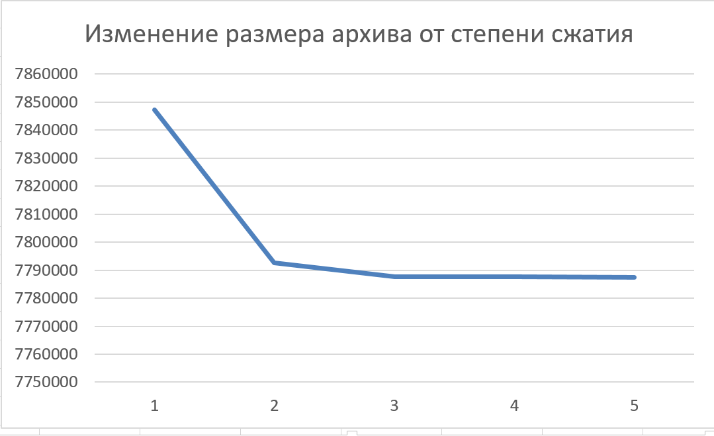
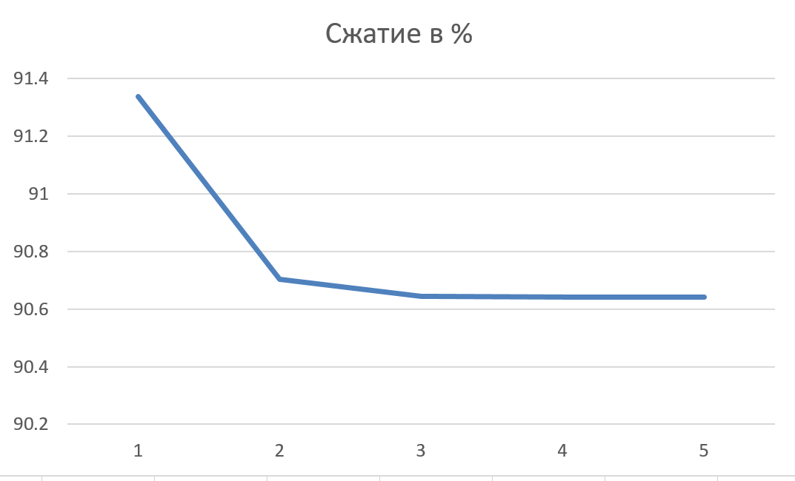
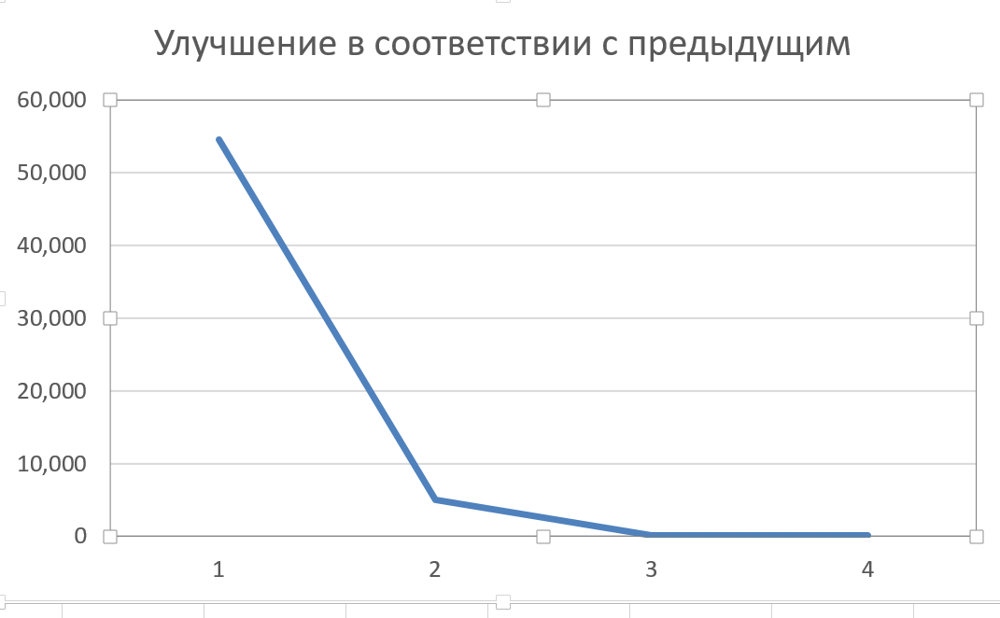
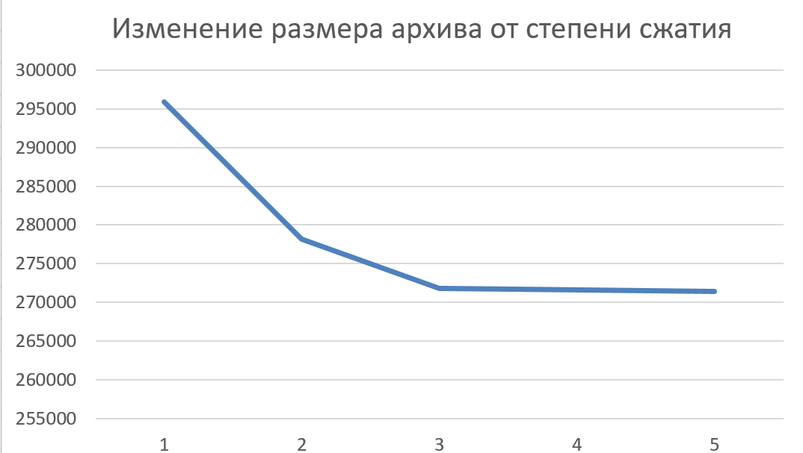
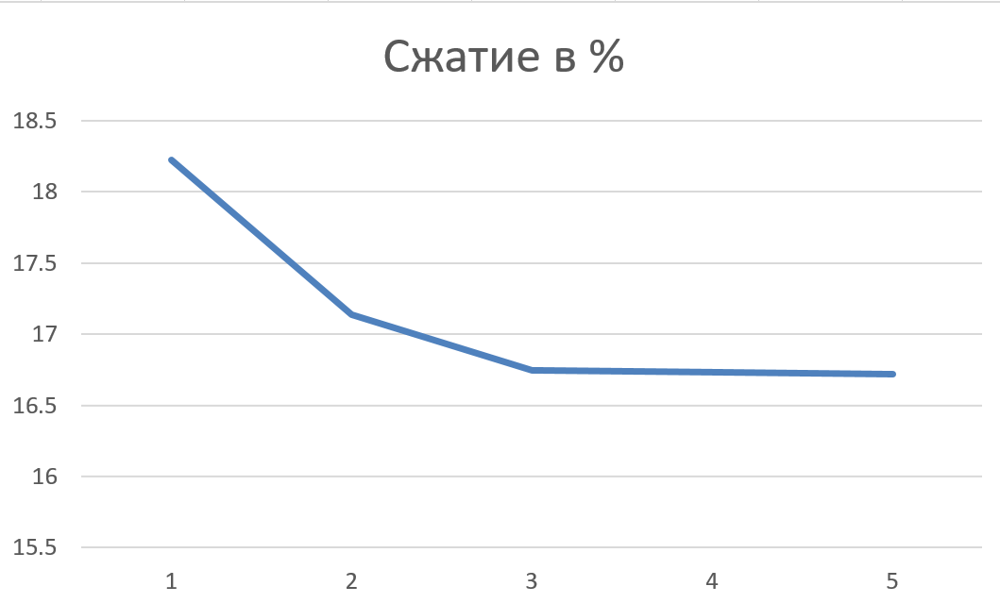
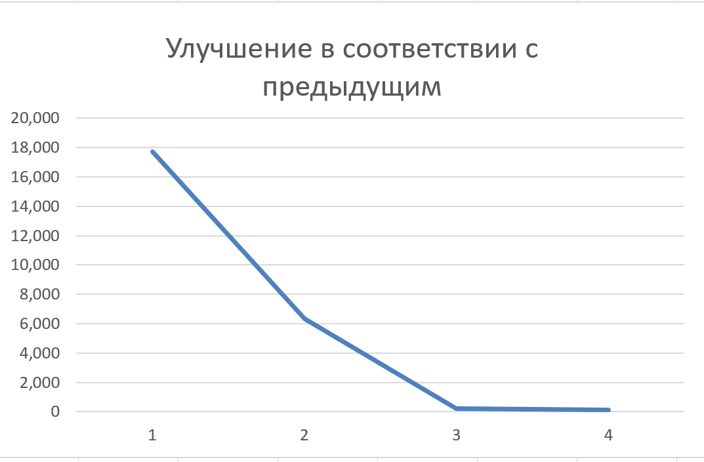

Цель работы: получить практические навыки работы с программой-архиватором WinRAR, научиться объединять файлы в архив, задавать параметры архива, осуществлять операции с архивными файлами.
Так как WinRar имеет консольные команды, как и 7z(только он лучше и не использует проприетарный форматы), то можно написал небольшой .bat файл:
@echo OFF
FOR %%x IN (0 1 2 3 4 5) DO rar a 1_%%x.rar *.pdf -m%%x
FOR %%x IN (0 1 2 3 4 5) DO rar a 2_%%x.rar *.xls -m%%x
Исходные файлы:
Полученные архивы:
Таблица для .pdf:
Графики для .pdf:
  
Таблица для .xls:
Графики для .xls:
  
Итоги: как можно заметить самое эффективное сжатие происходит в первых трёх степенях сжатия, остальные же не сильно влияют на размер. Но если у вас каждый байт на счету, то лучше сжимать по максимуму.
Непрерывный архив:
.pdf:
.xls:

Разделённый архив:
.pdf:

.xls:

Комментарий: с xls, при любом параметре деления на разделы, деление не происходит
Самораспаковывающийся архив: